RNA-seq Analysis Guide
Author: Matthew Hung
Last Updated: 2025/05/03
Source:vignettes/rna_guide.Rmd
rna_guide.RmdFirst, load the deseq2pip package:
## Warning: replacing previous import 'S4Arrays::makeNindexFromArrayViewport' by
## 'DelayedArray::makeNindexFromArrayViewport' when loading 'SummarizedExperiment'
save_dir <- tempdir()
dir.create(save_dir, recursive = TRUE)## Warning in dir.create(save_dir, recursive = TRUE): '/tmp/RtmpCgmRIG' already
## exists
#setwd("/Users/hungm/The Francis Crick Dropbox/CaladoD/Matthew/github-repos/r-pipelines/deseq2pip/tests/rnaseq/module/")Data Import and Setup
Let’s import and prepare your data. We’ll use the example dataset GSE189410 to demonstrate the workflow:
# load example DESeq2 object
rdata <- system.file("data", "GSE189410.dds.RData", package = "deseq2pip")
tx2gene <- gzfile(system.file("data", "GSE189410.tx2gene.tsv.gz", package = "deseq2pip"))
dds <- import_nfcore_rna(rdata = rdata, tx2gene = tx2gene)
# set group variable (optional to manually set reference level)
dds$Group2 <- factor(dds$Group2, c('IgM', 'IgG', 'IgA'))
# set dds design with desired variables
# for more information about setting contrasts in DESeq2, see: https://github.com/tavareshugo/tutorial_DESeq2_contrasts?tab=readme-ov-file
design(dds) <- ~ Group2Detailed Overview of DESeq2 pipeline
The run_deseq2_pip() function is a wrapper function that runs the complete RNA-seq analysis for every PAIRWISE and ONE-TO-ALL comparison pairs in the specified group variable.
The analysis for each comparison pair can be broken down into three modules:
- Quality Control: Filters genes, generates QC/PCA/distance plots, and saves expression data
- Differential Expression Analysis: Performs DESeq2 analysis, functional gene annotation, and creates volcano plots
run_diffexp_pip()-
plot_peak_annot_pip()(ATAC-seq only)
- GSEA Analysis: Find enriched pathways using MSigDB collections and prepare results for EnrichmentMap visualization
run_gsea_pip()run_enrichmentmap_pip()
For our example dataset, we have 3 comparison pairs in the group
variable Group2: IgM vs IgG,
IgM vs IgA, and IgG vs
IgA.
Here’s how to run the complete pipeline with a single command: Note: Repeating run_deseq2_pip will overwrite the existing files if the same directory name is used. To prevent this, please specify a different save_dir directory.
# run deseq2 pipeline
#run_rna_pip(dds, experiment = "GSE189410", org = "mouse", group_by = "Group2", remove_xy = TRUE, remove_mt = TRUE, save_dir = save_dir)Run individual modules
After an initial run of the DESeq2 pipeline, you may wish to run a specific module using different parameters or comparison groups without repeating the entire pipeline.
Here’s how to run each module separately. First, set the global arguments.
# set pipeline arguments
group_by <- "Group2"
org <- "mouse"
remove_xy <- TRUE
remove_mt <- TRUE
quantile <- 0.05
batch <- NULL
pals <- NULL
order <- "pxfc"
one_to_all <- FALSE
msigdbr <- import_msigdbr(org = org)
# set additional arguments
save_data <- FALSE
save_plot <- FALSEBelow are the commands to run each individual module:
# Module 1: Quality Control
dds <- run_qc_pip(dds, org = org, group_by = group_by, remove_xy = remove_xy, remove_mt = remove_mt, quantile = quantile, save_dir = save_dir)## Removing 4050 XY genes out of 54513 total genes...## Removing 37 MT genes out of 50463 total genes...## Filtering genes with low expressions...
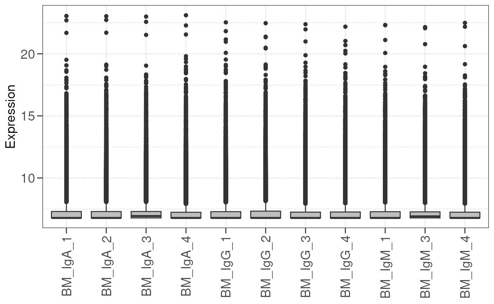
## Saving DESeq2 object & expressions...
dds <- run_dist_pip(dds, group_by = group_by, batch = batch, pals = pals, save_dir = save_dir)## Running batch correction...## Running PCA and distance analysis...## group_by is not a factor, converting to factor## using ntop=500 top features by variance
## using ntop=500 top features by variance
## group_by is not a factor, converting to factor
## using ntop=500 top features by variance
## using ntop=500 top features by variance

# Module 2: Differential Expression Analysis
res <- run_diffexp_pip(dds, org = org, group_by = group_by, order = order, one_to_all = one_to_all, save_dir = save_dir)## Running PAIRWISE differential expression analysis...## using pre-existing size factors## estimating dispersions## gene-wise dispersion estimates## mean-dispersion relationship## final dispersion estimates## fitting model and testing## using 'ashr' for LFC shrinkage. If used in published research, please cite:
## Stephens, M. (2016) False discovery rates: a new deal. Biostatistics, 18:2.
## https://doi.org/10.1093/biostatistics/kxw041## Combining row metadata to results...## Warning: The OmnipathR package is needed for annotation functions. Please
## install it with: BiocManager::install('OmnipathR')## Converting baseMean to numeric## Converting log2FoldChange to numeric## Converting padj to numeric## Converting rank to numeric## Warning: ggrepel: 701 unlabeled data points (too many overlaps). Consider
## increasing max.overlaps## Warning: ggrepel: 704 unlabeled data points (too many overlaps). Consider
## increasing max.overlaps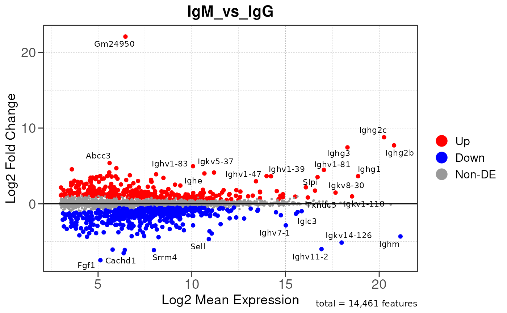
## Converting baseMean to numeric## Converting log2FoldChange to numeric## Converting padj to numeric## Converting rank to numeric## Warning: Removed 14978 rows containing missing values or values outside the scale range
## (`geom_text()`).## Warning: ggrepel: 35 unlabeled data points (too many overlaps). Consider
## increasing max.overlaps## Warning: Removed 14978 rows containing missing values or values outside the scale range
## (`geom_text()`).## Warning: ggrepel: 39 unlabeled data points (too many overlaps). Consider
## increasing max.overlaps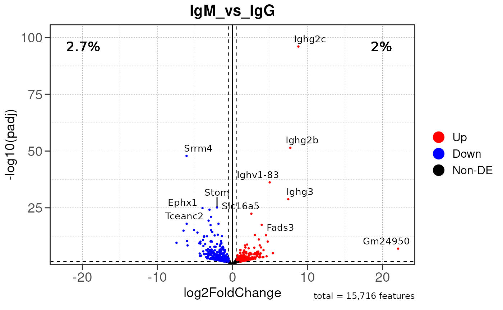
## using pre-existing size factors## estimating dispersions## gene-wise dispersion estimates## mean-dispersion relationship## final dispersion estimates## fitting model and testing## using 'ashr' for LFC shrinkage. If used in published research, please cite:
## Stephens, M. (2016) False discovery rates: a new deal. Biostatistics, 18:2.
## https://doi.org/10.1093/biostatistics/kxw041## Combining row metadata to results...## Warning: The OmnipathR package is needed for annotation functions. Please
## install it with: BiocManager::install('OmnipathR')## Converting baseMean to numeric## Converting log2FoldChange to numeric## Converting padj to numeric## Converting rank to numeric## Warning: ggrepel: 1542 unlabeled data points (too many overlaps). Consider
## increasing max.overlaps## Warning: ggrepel: 1545 unlabeled data points (too many overlaps). Consider
## increasing max.overlaps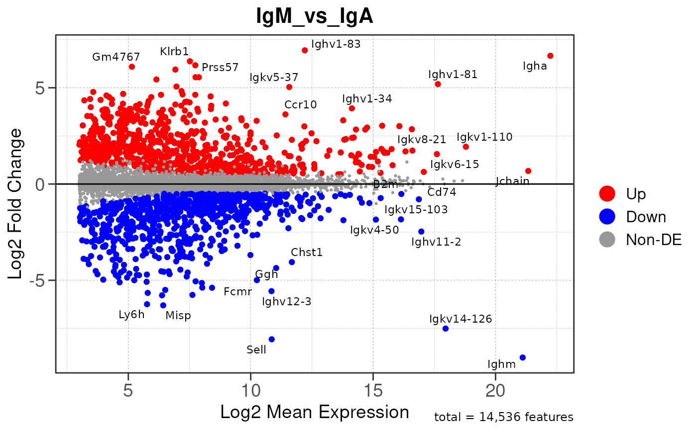
## Converting baseMean to numeric## Converting log2FoldChange to numeric## Converting padj to numeric## Converting rank to numeric## Warning: Removed 16550 rows containing missing values or values outside the scale range
## (`geom_text()`).## Warning: ggrepel: 23 unlabeled data points (too many overlaps). Consider
## increasing max.overlaps## Warning: Removed 16550 rows containing missing values or values outside the scale range
## (`geom_text()`).## Warning: ggrepel: 30 unlabeled data points (too many overlaps). Consider
## increasing max.overlaps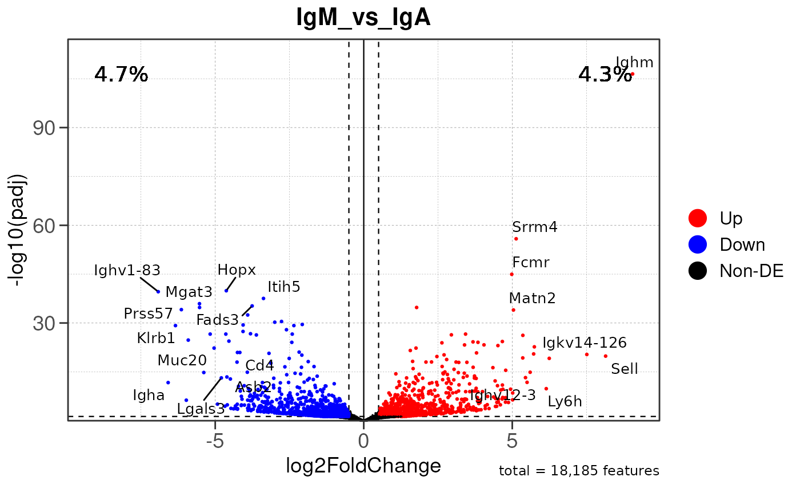
## using pre-existing size factors## estimating dispersions## gene-wise dispersion estimates## mean-dispersion relationship## final dispersion estimates## fitting model and testing## using 'ashr' for LFC shrinkage. If used in published research, please cite:
## Stephens, M. (2016) False discovery rates: a new deal. Biostatistics, 18:2.
## https://doi.org/10.1093/biostatistics/kxw041## Combining row metadata to results...## Warning: The OmnipathR package is needed for annotation functions. Please
## install it with: BiocManager::install('OmnipathR')## Converting baseMean to numeric## Converting log2FoldChange to numeric## Converting padj to numeric## Converting rank to numeric## Warning: ggrepel: 953 unlabeled data points (too many overlaps). Consider
## increasing max.overlaps## Warning: ggrepel: 954 unlabeled data points (too many overlaps). Consider
## increasing max.overlaps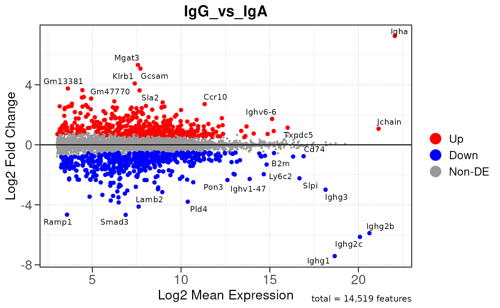
## Converting baseMean to numeric## Converting log2FoldChange to numeric## Converting padj to numeric## Converting rank to numeric## Warning: Removed 15580 rows containing missing values or values outside the scale range
## (`geom_text()`).## Warning: ggrepel: 35 unlabeled data points (too many overlaps). Consider
## increasing max.overlaps## Warning: Removed 15580 rows containing missing values or values outside the scale range
## (`geom_text()`).## Warning: ggrepel: 37 unlabeled data points (too many overlaps). Consider
## increasing max.overlaps
#res <- plot_peak_annot_pip(res, org = org, save_dir = save_dir)
# Module 3: GSEA Analysis
group_dir <- paste0(save_dir, "/pairwise_", group_by)
gsea <- run_gsea_pip(res = res, org = org, msigdbr = , group_save_dir = group_dir)## Converting baseMean to numeric## Converting log2FoldChange to numeric## Converting padj to numeric## Converting rank to numeric## Converting baseMean to numeric## Converting log2FoldChange to numeric## Converting padj to numeric## Converting rank to numeric## Converting baseMean to numeric## Converting log2FoldChange to numeric## Converting padj to numeric## Converting rank to numeric## using 'fgsea' for GSEA analysis, please cite Korotkevich et al (2019).## preparing geneSet collections...## GSEA analysis...## leading edge analysis...## done...## using 'fgsea' for GSEA analysis, please cite Korotkevich et al (2019).## preparing geneSet collections...## GSEA analysis...## leading edge analysis...## done...## using 'fgsea' for GSEA analysis, please cite Korotkevich et al (2019).## preparing geneSet collections...## GSEA analysis...## leading edge analysis...## done...## using 'fgsea' for GSEA analysis, please cite Korotkevich et al (2019).## preparing geneSet collections...## GSEA analysis...## leading edge analysis...## done...## using 'fgsea' for GSEA analysis, please cite Korotkevich et al (2019).## preparing geneSet collections...## GSEA analysis...## leading edge analysis...## done...## using 'fgsea' for GSEA analysis, please cite Korotkevich et al (2019).## preparing geneSet collections...## GSEA analysis...## leading edge analysis...## done...## Converting NES to numeric## Converting pvalue to numeric## Converting qvalue to numeric## Warning in geom_col(aes(stroke = label), width = 0.75, col = "black"):
## Ignoring unknown aesthetics: stroke## Warning: Removed 8 rows containing missing values or values outside the scale range
## (`geom_text()`).
## Removed 8 rows containing missing values or values outside the scale range
## (`geom_text()`).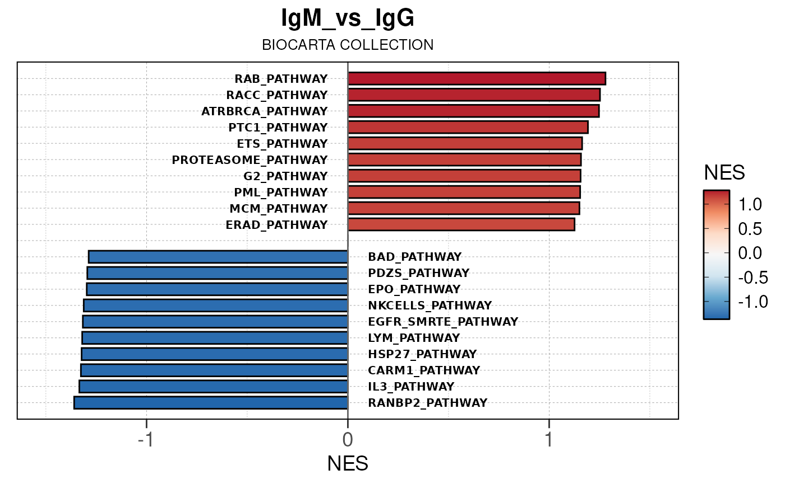
## Converting NES to numeric## Converting pvalue to numeric## Converting qvalue to numeric## Warning in geom_col(aes(stroke = label), width = 0.75, col = "black"):
## Ignoring unknown aesthetics: stroke## Warning: Removed 9 rows containing missing values or values outside the scale range
## (`geom_text()`).
## Removed 9 rows containing missing values or values outside the scale range
## (`geom_text()`).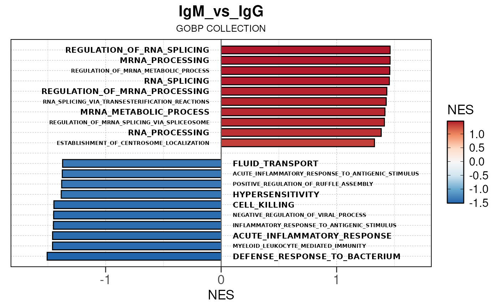
## Converting NES to numeric## Converting pvalue to numeric## Converting qvalue to numeric## Warning in geom_col(aes(stroke = label), width = 0.75, col = "black"):
## Ignoring unknown aesthetics: stroke## Warning: Removed 2 rows containing missing values or values outside the scale range
## (`geom_text()`).
## Removed 2 rows containing missing values or values outside the scale range
## (`geom_text()`).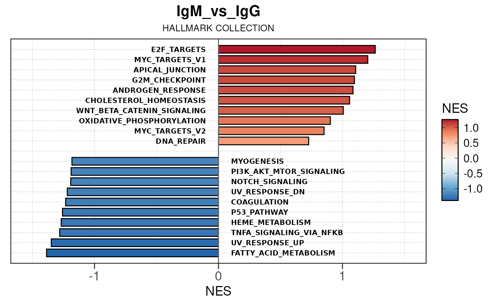
## Converting NES to numeric## Converting pvalue to numeric## Converting qvalue to numeric## Warning in geom_col(aes(stroke = label), width = 0.75, col = "black"):
## Ignoring unknown aesthetics: stroke## Warning: Removed 19 rows containing missing values or values outside the scale range
## (`geom_text()`).
## Removed 19 rows containing missing values or values outside the scale range
## (`geom_text()`).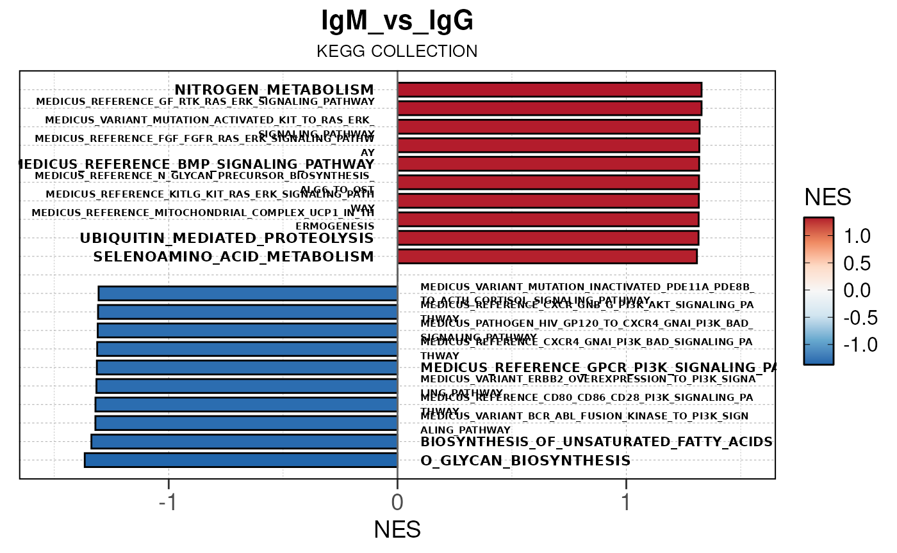
## Converting NES to numeric## Converting pvalue to numeric## Converting qvalue to numeric## Warning in geom_col(aes(stroke = label), width = 0.75, col = "black"):
## Ignoring unknown aesthetics: stroke## Warning: Removed 3 rows containing missing values or values outside the scale range
## (`geom_text()`).
## Removed 3 rows containing missing values or values outside the scale range
## (`geom_text()`).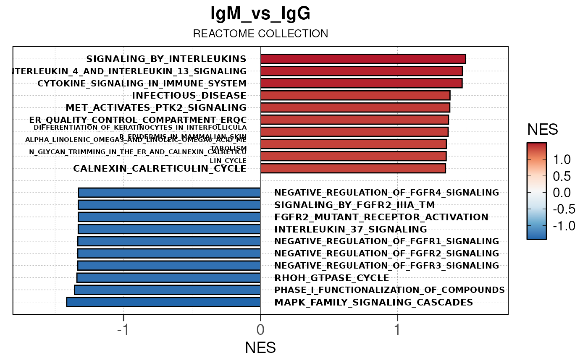
## Converting NES to numeric## Converting pvalue to numeric## Converting qvalue to numeric## Warning in geom_col(aes(stroke = label), width = 0.75, col = "black"):
## Ignoring unknown aesthetics: stroke## Warning: Removed 10 rows containing missing values or values outside the scale range
## (`geom_text()`).
## Removed 10 rows containing missing values or values outside the scale range
## (`geom_text()`).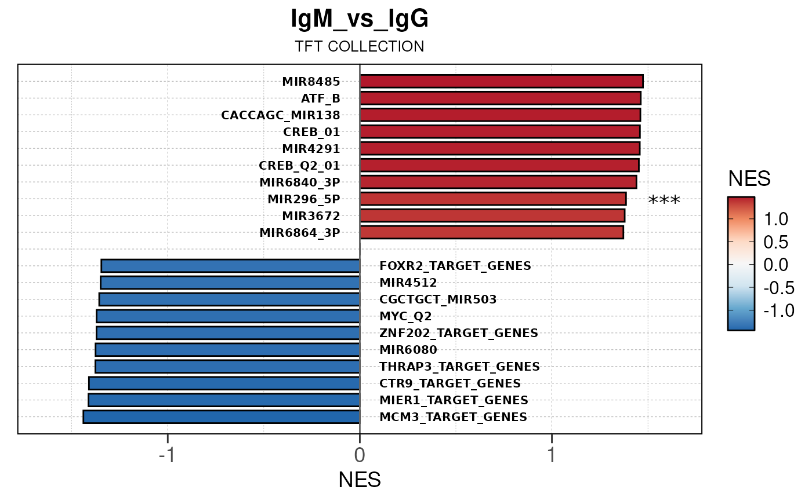
## Converting baseMean to numeric## Converting log2FoldChange to numeric## Converting padj to numeric## Converting rank to numeric## Converting baseMean to numeric## Converting log2FoldChange to numeric## Converting padj to numeric## Converting rank to numeric## using 'fgsea' for GSEA analysis, please cite Korotkevich et al (2019).## preparing geneSet collections...## GSEA analysis...## Warning in preparePathwaysAndStats(pathways, stats, minSize, maxSize, gseaParam, : There are ties in the preranked stats (0.03% of the list).
## The order of those tied genes will be arbitrary, which may produce unexpected results.## leading edge analysis...## done...## using 'fgsea' for GSEA analysis, please cite Korotkevich et al (2019).## preparing geneSet collections...## GSEA analysis...## Warning in preparePathwaysAndStats(pathways, stats, minSize, maxSize, gseaParam, : There are ties in the preranked stats (0.03% of the list).
## The order of those tied genes will be arbitrary, which may produce unexpected results.## leading edge analysis...## done...## using 'fgsea' for GSEA analysis, please cite Korotkevich et al (2019).## preparing geneSet collections...## GSEA analysis...## Warning in preparePathwaysAndStats(pathways, stats, minSize, maxSize, gseaParam, : There are ties in the preranked stats (0.03% of the list).
## The order of those tied genes will be arbitrary, which may produce unexpected results.## leading edge analysis...## done...## using 'fgsea' for GSEA analysis, please cite Korotkevich et al (2019).## preparing geneSet collections...## GSEA analysis...## Warning in preparePathwaysAndStats(pathways, stats, minSize, maxSize, gseaParam, : There are ties in the preranked stats (0.03% of the list).
## The order of those tied genes will be arbitrary, which may produce unexpected results.## leading edge analysis...## done...## using 'fgsea' for GSEA analysis, please cite Korotkevich et al (2019).## preparing geneSet collections...## GSEA analysis...## Warning in preparePathwaysAndStats(pathways, stats, minSize, maxSize, gseaParam, : There are ties in the preranked stats (0.03% of the list).
## The order of those tied genes will be arbitrary, which may produce unexpected results.## leading edge analysis...## done...## using 'fgsea' for GSEA analysis, please cite Korotkevich et al (2019).## preparing geneSet collections...## GSEA analysis...## Warning in preparePathwaysAndStats(pathways, stats, minSize, maxSize, gseaParam, : There are ties in the preranked stats (0.03% of the list).
## The order of those tied genes will be arbitrary, which may produce unexpected results.## leading edge analysis...## done...## Converting NES to numeric## Converting pvalue to numeric## Converting qvalue to numeric## Warning in geom_col(aes(stroke = label), width = 0.75, col = "black"): Ignoring unknown aesthetics: stroke
## Removed 10 rows containing missing values or values outside the scale range
## (`geom_text()`).
## Removed 10 rows containing missing values or values outside the scale range
## (`geom_text()`).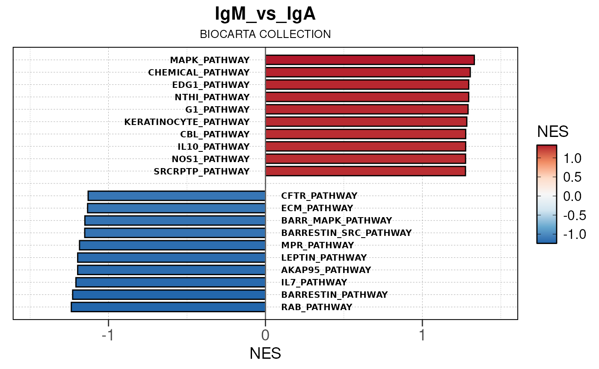
## Converting NES to numeric## Converting pvalue to numeric## Converting qvalue to numeric## Warning in geom_col(aes(stroke = label), width = 0.75, col = "black"):
## Ignoring unknown aesthetics: stroke## Warning: Removed 2 rows containing missing values or values outside the scale range
## (`geom_text()`).
## Removed 2 rows containing missing values or values outside the scale range
## (`geom_text()`).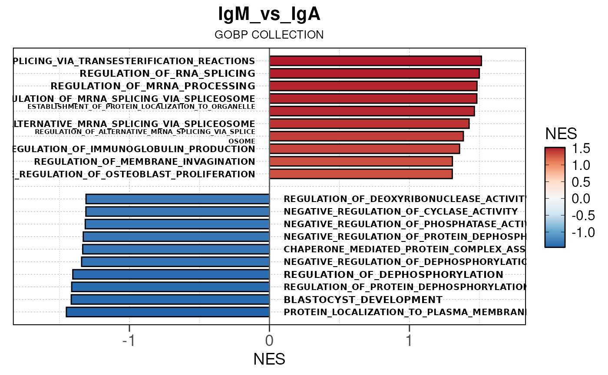
## Converting NES to numeric## Converting pvalue to numeric## Converting qvalue to numeric## Warning in geom_col(aes(stroke = label), width = 0.75, col = "black"):
## Ignoring unknown aesthetics: stroke## Warning: Removed 3 rows containing missing values or values outside the scale range
## (`geom_text()`).
## Removed 3 rows containing missing values or values outside the scale range
## (`geom_text()`).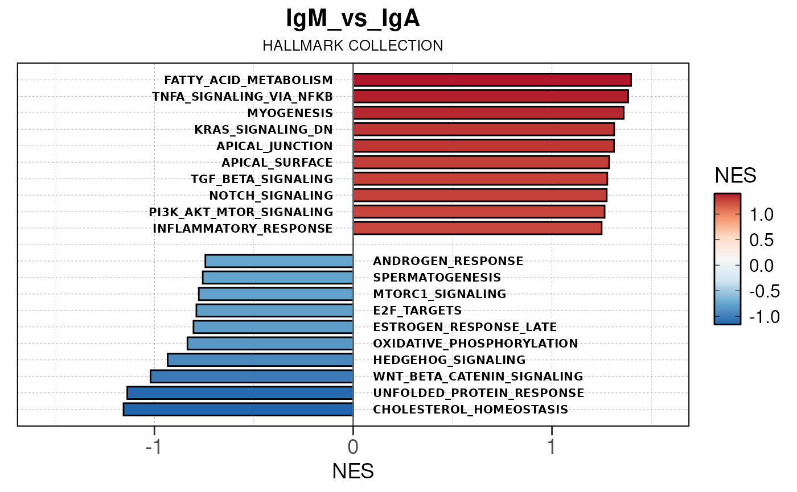
## Converting NES to numeric## Converting pvalue to numeric## Converting qvalue to numeric## Warning in geom_col(aes(stroke = label), width = 0.75, col = "black"):
## Ignoring unknown aesthetics: stroke## Warning: Removed 5 rows containing missing values or values outside the scale range
## (`geom_text()`).
## Removed 5 rows containing missing values or values outside the scale range
## (`geom_text()`).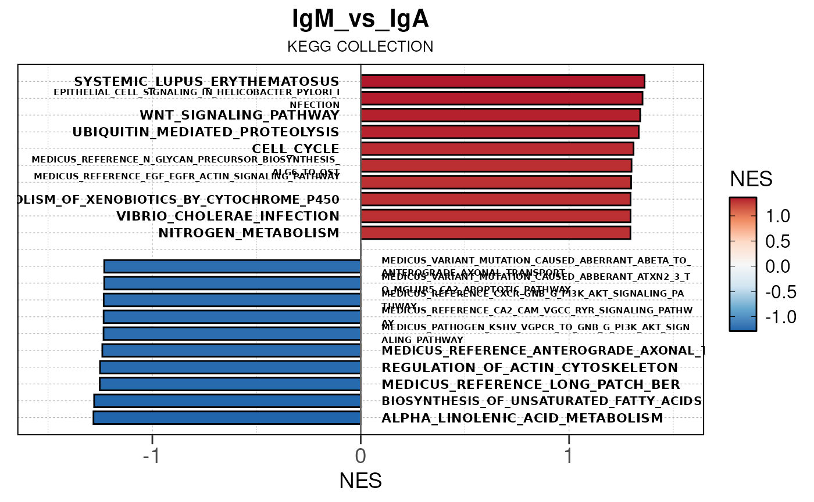
## Converting NES to numeric## Converting pvalue to numeric## Converting qvalue to numeric## Warning in geom_col(aes(stroke = label), width = 0.75, col = "black"):
## Ignoring unknown aesthetics: stroke## Warning: Removed 7 rows containing missing values or values outside the scale range
## (`geom_text()`).
## Removed 7 rows containing missing values or values outside the scale range
## (`geom_text()`).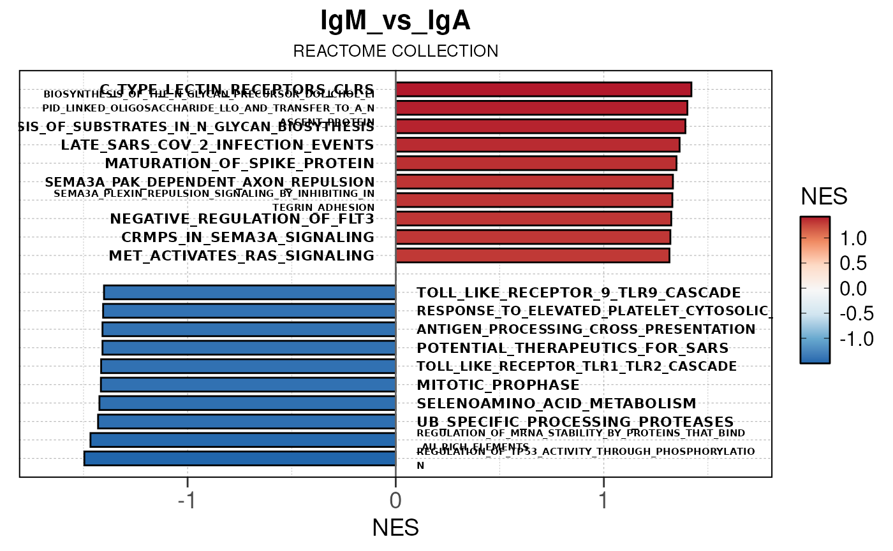
## Converting NES to numeric## Converting pvalue to numeric## Converting qvalue to numeric## Warning in geom_col(aes(stroke = label), width = 0.75, col = "black"):
## Ignoring unknown aesthetics: stroke## Warning: Removed 4 rows containing missing values or values outside the scale range
## (`geom_text()`).
## Removed 4 rows containing missing values or values outside the scale range
## (`geom_text()`).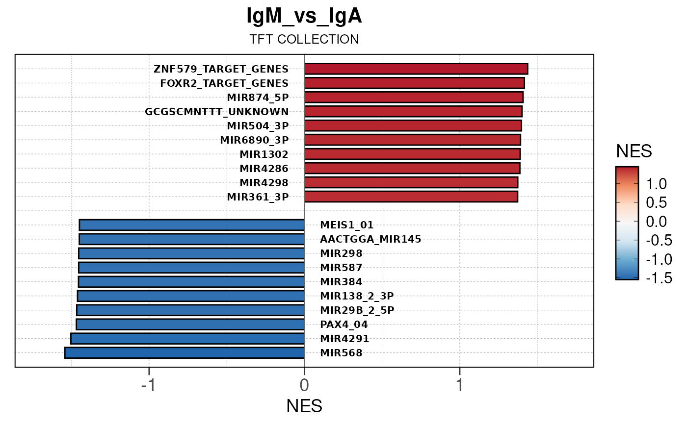
## Converting baseMean to numeric## Converting log2FoldChange to numeric## Converting padj to numeric## Converting rank to numeric## Converting baseMean to numeric## Converting log2FoldChange to numeric## Converting padj to numeric## Converting rank to numeric## using 'fgsea' for GSEA analysis, please cite Korotkevich et al (2019).## preparing geneSet collections...## GSEA analysis...## leading edge analysis...## done...## using 'fgsea' for GSEA analysis, please cite Korotkevich et al (2019).## preparing geneSet collections...## GSEA analysis...## leading edge analysis...## done...## using 'fgsea' for GSEA analysis, please cite Korotkevich et al (2019).## preparing geneSet collections...## GSEA analysis...## leading edge analysis...## done...## using 'fgsea' for GSEA analysis, please cite Korotkevich et al (2019).## preparing geneSet collections...## GSEA analysis...## leading edge analysis...## done...## using 'fgsea' for GSEA analysis, please cite Korotkevich et al (2019).## preparing geneSet collections...## GSEA analysis...## leading edge analysis...## done...## using 'fgsea' for GSEA analysis, please cite Korotkevich et al (2019).## preparing geneSet collections...## GSEA analysis...## leading edge analysis...## done...## Converting NES to numeric## Converting pvalue to numeric## Converting qvalue to numeric## Warning in geom_col(aes(stroke = label), width = 0.75, col = "black"):
## Ignoring unknown aesthetics: stroke## Warning: Removed 17 rows containing missing values or values outside the scale range
## (`geom_text()`).
## Removed 17 rows containing missing values or values outside the scale range
## (`geom_text()`).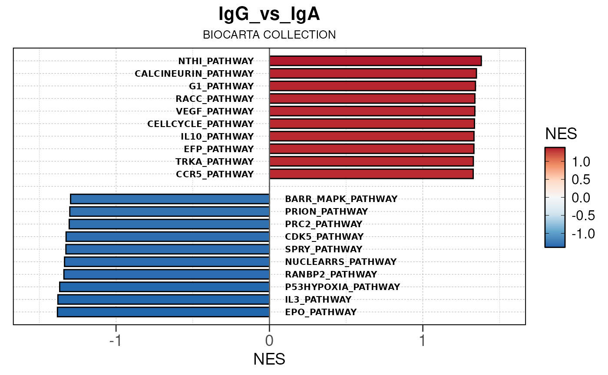
## Converting NES to numeric## Converting pvalue to numeric## Converting qvalue to numeric## Warning in geom_col(aes(stroke = label), width = 0.75, col = "black"):
## Ignoring unknown aesthetics: stroke## Warning: Removed 4 rows containing missing values or values outside the scale range
## (`geom_text()`).
## Removed 4 rows containing missing values or values outside the scale range
## (`geom_text()`).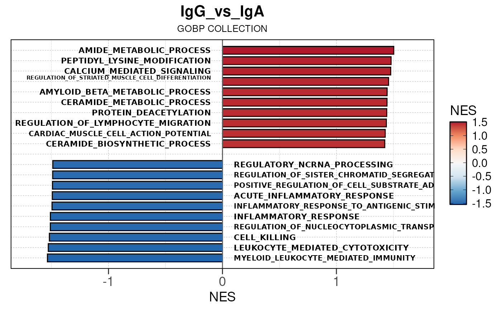
## Converting NES to numeric## Converting pvalue to numeric## Converting qvalue to numeric## Warning in geom_col(aes(stroke = label), width = 0.75, col = "black"):
## Ignoring unknown aesthetics: stroke## Warning: Removed 1 row containing missing values or values outside the scale range
## (`geom_text()`).
## Removed 1 row containing missing values or values outside the scale range
## (`geom_text()`).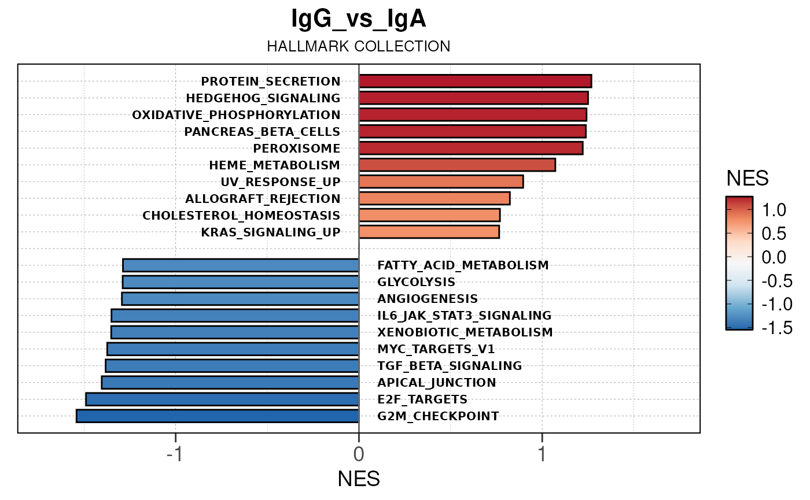
## Converting NES to numeric## Converting pvalue to numeric## Converting qvalue to numeric## Warning in geom_col(aes(stroke = label), width = 0.75, col = "black"):
## Ignoring unknown aesthetics: stroke## Warning: Removed 2 rows containing missing values or values outside the scale range
## (`geom_text()`).
## Removed 2 rows containing missing values or values outside the scale range
## (`geom_text()`).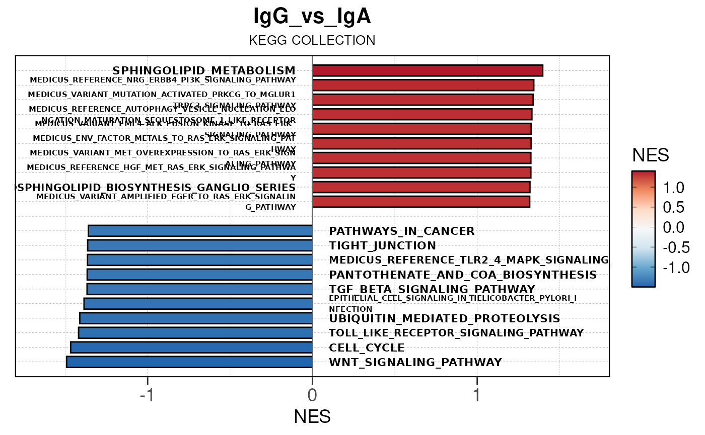
## Converting NES to numeric## Converting pvalue to numeric## Converting qvalue to numeric## Warning in geom_col(aes(stroke = label), width = 0.75, col = "black"):
## Ignoring unknown aesthetics: stroke## Warning: Removed 3 rows containing missing values or values outside the scale range
## (`geom_text()`).
## Removed 3 rows containing missing values or values outside the scale range
## (`geom_text()`).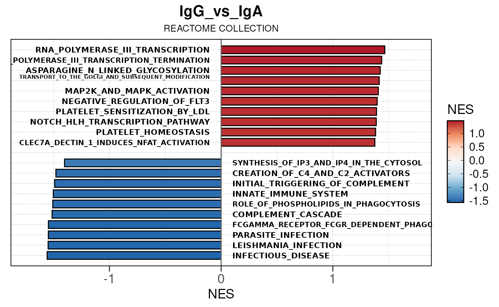
## Converting NES to numeric## Converting pvalue to numeric## Converting qvalue to numeric## Warning in geom_col(aes(stroke = label), width = 0.75, col = "black"):
## Ignoring unknown aesthetics: stroke## Warning: Removed 5 rows containing missing values or values outside the scale range
## (`geom_text()`).
## Removed 5 rows containing missing values or values outside the scale range
## (`geom_text()`).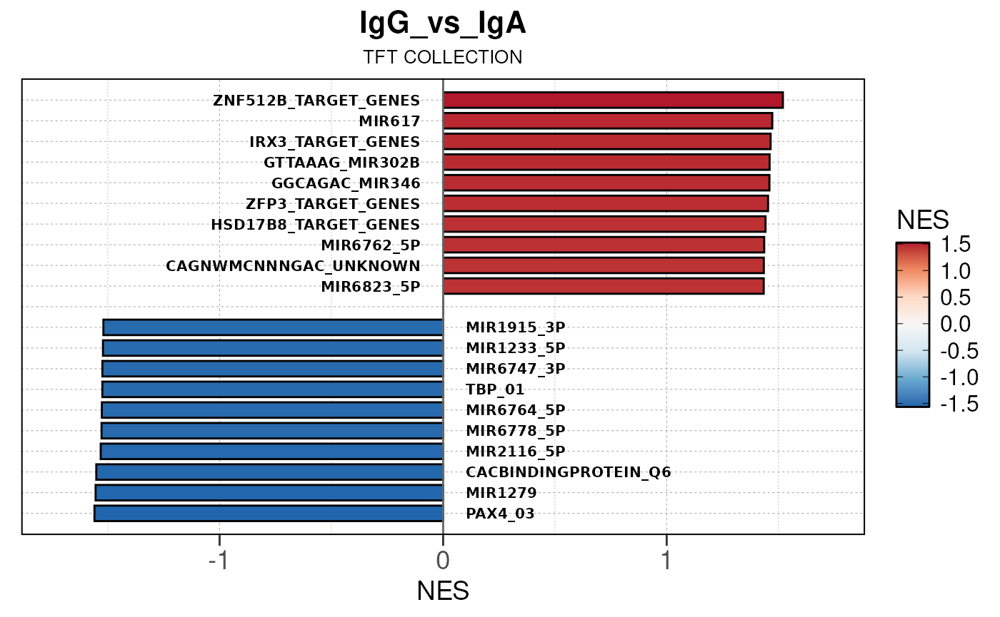
enrichmentmap_pip(dds, org = org, group_by = group_by, group_dir = group_dir, save_dir = group_dir)## Formatting for enrichmentmap...## Writing class files for PAIRWISE comparisons...Module 1 Breakdown
The run_qc_pip() module contains a sequence of
subprocesses that performs quality control checks on the data. This
includes removing XY and MT genes, removing lowly expressed genes, and
checking library size distribution.
Remove XY and MT genes
If your data contains samples taken from both males and females that
you are not interested in, you can optionally remove gender-specific
genes on X and Y chromosomes. This can be done with the
remove_xy_genes() function.
Similarly, if your data contains mitochondrial genes that you are not
interested in, you can optionally remove them with the
remove_mt_genes() function.
This is optional but recommended if you see a gender-specific effect in downstream PCA and distance analysis.
# when remove_xy or remove_mt are TRUE
if(remove_xy) {
dds <- remove_xy_genes(dds, org = org)}## Removing 0 XY genes out of 50426 total genes...
if(remove_mt) {
dds <- remove_mt_genes(dds, org = org)}## Removing 0 MT genes out of 50426 total genes...Remove lowly expressed genes
RNA-seq is a high-throughput technology that can be noisy, and certain genes are poorly captured from RNA-seq. To control for this, we will remove these genes to improve statistical power for subsequent analysis.
By default we keep genes with at least 5% of total expression
(remove_low_expression(..., quantile = 0.05)). The gene
must also be expressed in at least n replicates, where n is the minimum
replicates in the group.
# remove low expression genes
dds <- remove_low_expression(dds, quantile = quantile, group_by = group_by, save_plot = save_plot, save_dir = save_dir)## Filtering genes with low expressions...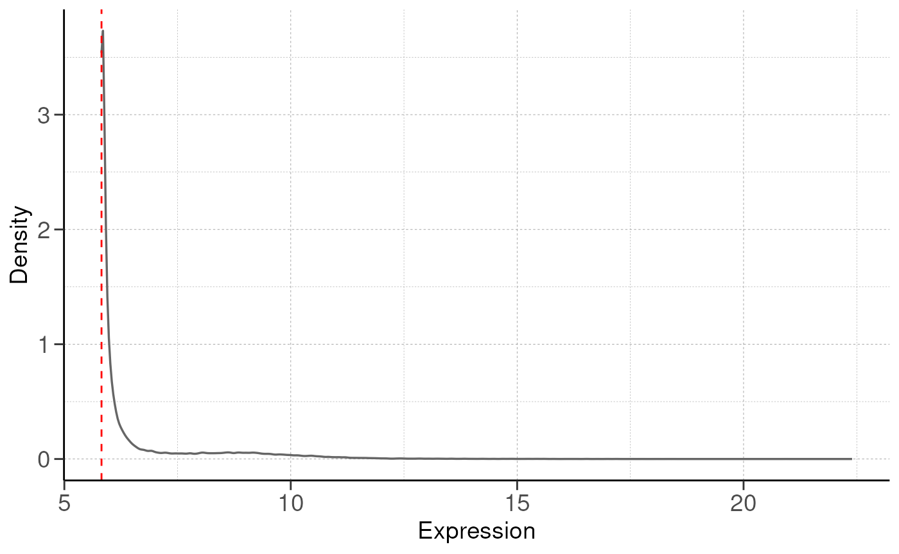
Check library size distribution
Expression of genes may vary between samples, and this may be due to sample/batch quality issues.
Here we draw a boxplot representing expression level of every gene
and compare the gene expression distribution from each sample using the
check_library() function.
If the boxplots show little variation in expression level across samples, this indicates that the samples are of high quality and suitable for differential expression analysis.
Otherwise, one should consider removing the samples with low quality or perform batch correction downstream to address quality issues. This will address technical variation between samples/batches and improve the statistical power for true biological variations.
# check library size distribution
check_library(dds, save_plot = save_plot, save_dir = save_dir)
Run PCA and distance analysis
Next we visualize the relationship between samples/groups using PCA
and distance analysis using the run_pca() and
run_distance() functions.
If there are true biological variability between groups, replicas from the same group should cluster closely in the PCA plot and have lower distance values in the distance heatmap.
Again, one should consider sample/batch quality if the samples do not separate as expected.
# run PCA for the samples with group information
vsd <- vst(dds, blind = FALSE)
run_pca(vsd, group_by = group_by, size = 4, save_data = save_data, save_plot = save_plot, save_dir = save_dir)## using ntop=500 top features by variance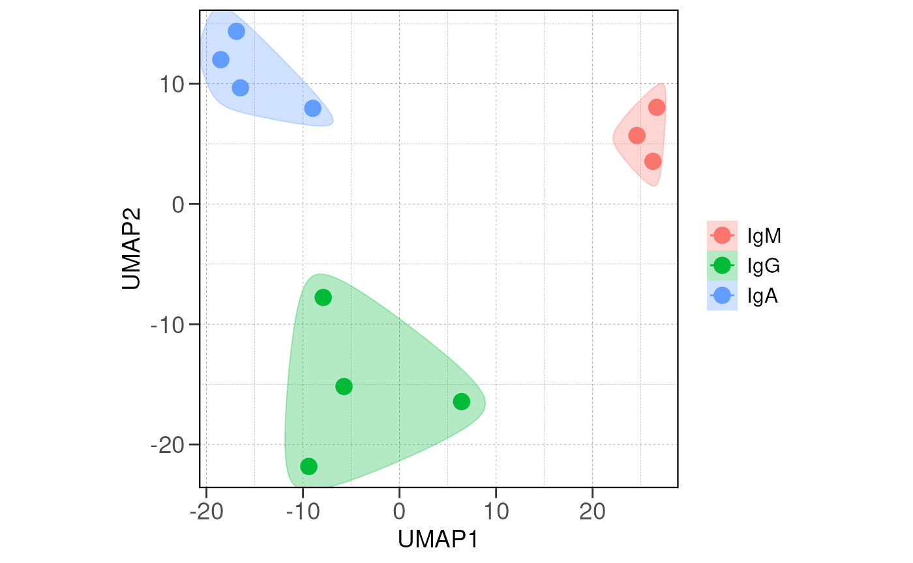
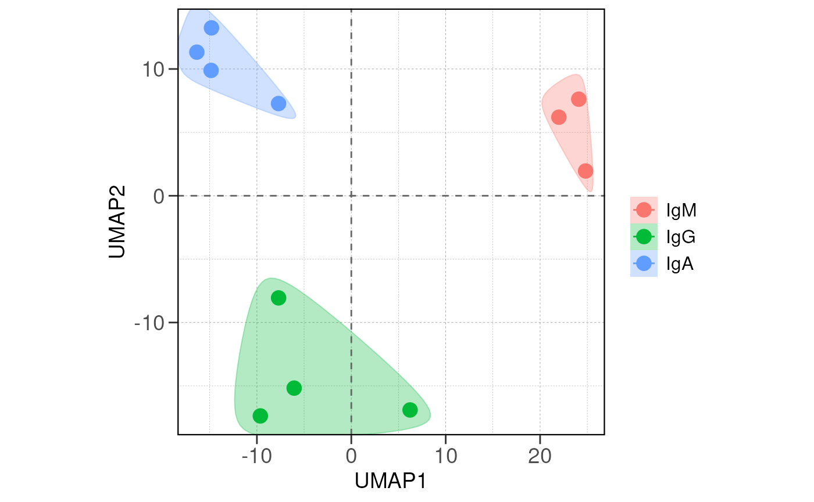
# run distance analysis between samples
run_distance(vsd, save_data = save_data, save_plot = save_plot, save_dir = save_dir)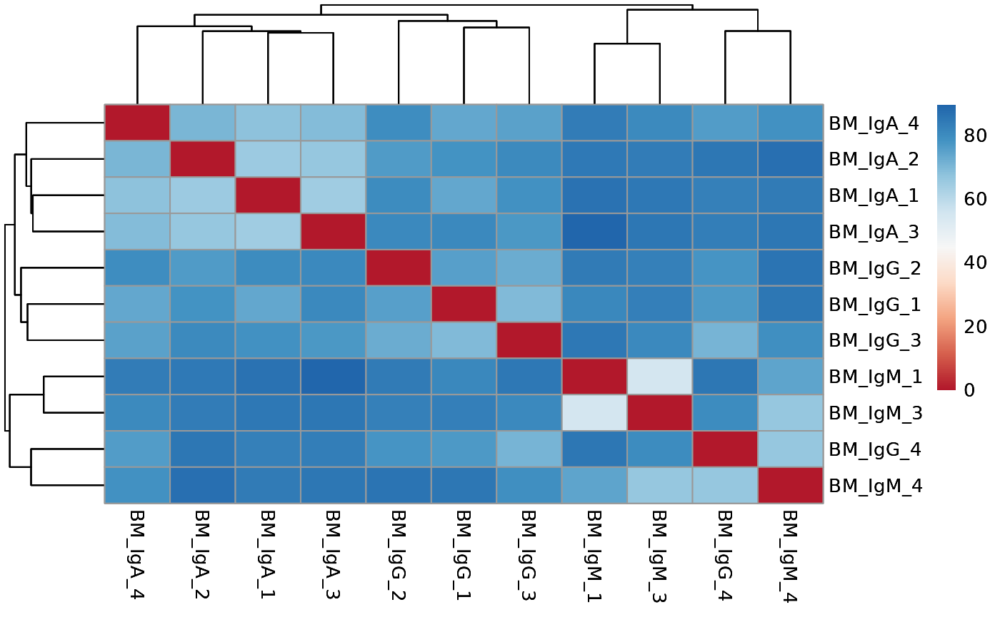
Module 2: Differential Expression Analysis
The run_diffexp_pip() module performs statistical
analysis to identify differentially expressed genes between groups using
DESeq2::DESeq2() function, with p-values were generated
using DESeq2 test.
Main function
The main function in the module is the run_diffexp_pip()
function, which by default will perform all pairwise/one-to-all
comparisons between groups in the DESeq2 object.
This returns a single dataframe all metrics from
DESeq2::results(), and the differentially expressed genes
for each comparison is separated by comparison column.
Fold change shrinkage is also performed by ashr
method.
Additionally, chromosome loci and functional annotations of each gene
was added to the dataframe using the
strpip::run_annotation() function (see https://github.com/hungms/strpip).
# run differential expression analysis for all comparisons; skipped here
#res <- run_diffexp_pip(dds, group_by = group_by, one_to_all = one_to_all, save_data = save_data, save_dir = save_dir)
#head(res)
# run differential expression analysis for a specific comparison
res <- run_diffexp(dds, org = org, group_by = group_by, comparison = "IgG_vs_IgA", order = order, save_data = save_data, save_dir = save_dir)## using pre-existing size factors## estimating dispersions## gene-wise dispersion estimates## mean-dispersion relationship## final dispersion estimates## fitting model and testing## using 'ashr' for LFC shrinkage. If used in published research, please cite:
## Stephens, M. (2016) False discovery rates: a new deal. Biostatistics, 18:2.
## https://doi.org/10.1093/biostatistics/kxw041## Combining row metadata to results...## Warning: The OmnipathR package is needed for annotation functions. Please
## install it with: BiocManager::install('OmnipathR')
head(res)## baseMean log2FoldChange lfcSE pvalue padj gene
## Mgat3 188.5907 5.322624 0.3842944 1.534812e-47 6.361411e-44 Mgat3
## Gcsam 207.8809 5.082252 0.3833150 3.833981e-44 1.271271e-40 Gcsam
## Klrb1 166.6979 4.089641 0.3288443 6.984282e-39 1.929874e-35 Klrb1
## Igha 4337380.4290 7.253573 0.8154216 1.819933e-22 2.011511e-19 Igha
## Hdac9 532.9338 2.545878 0.2317074 1.446885e-29 2.665324e-26 Hdac9
## Nfia 190.7992 2.215528 0.1940118 1.638143e-31 3.879825e-28 Nfia
## baseVar allZero dispGeneEst dispGeneIter dispFit dispersion
## Mgat3 3.776146e+04 FALSE 0.009918678 14 0.08558851 0.05080052
## Gcsam 4.747919e+04 FALSE 0.054438766 5 0.08242343 0.06820463
## Klrb1 2.770422e+04 FALSE 0.000000010 5 0.09006804 0.05701947
## Igha 2.108433e+13 FALSE 0.578398197 6 0.05148156 0.57839820
## Hdac9 1.695835e+05 FALSE 0.036560321 8 0.06355011 0.04638778
## Nfia 1.806722e+04 FALSE 0.000000010 4 0.08519370 0.02341745
## dispIter dispOutlier dispMAP Intercept Group2_IgA_vs_IgG SE_Intercept
## Mgat3 9 FALSE 0.05080052 3.079746 5.446600 0.3363843
## Gcsam 8 FALSE 0.06820463 3.445178 5.215735 0.3208164
## Klrb1 11 FALSE 0.05701947 4.080498 4.224775 0.2704166
## Igha 9 TRUE 0.31330656 15.475179 7.565616 0.5486173
## Hdac9 9 FALSE 0.04638778 7.216582 2.623558 0.1706306
## Nfia 7 FALSE 0.02341745 6.035192 2.268486 0.1530235
## SE_Group2_IgA_vs_IgG WaldStatistic_Intercept
## Mgat3 0.3760489 9.155439
## Gcsam 0.3742664 10.738783
## Klrb1 0.3239162 15.089671
## Igha 0.7758515 28.207603
## Hdac9 0.2323498 42.293609
## Nfia 0.1942416 39.439649
## WaldStatistic_Group2_IgA_vs_IgG WaldPvalue_Intercept
## Mgat3 14.483754 5.413705e-20
## Gcsam 13.935889 6.692058e-27
## Klrb1 13.042801 1.893855e-51
## Igha 9.751371 4.717743e-175
## Hdac9 11.291415 0.000000e+00
## Nfia 11.678683 0.000000e+00
## WaldPvalue_Group2_IgA_vs_IgG betaConv betaIter deviance maxCooks
## Mgat3 1.534812e-47 TRUE 3 62.91268 0.74959351
## Gcsam 3.833981e-44 TRUE 3 65.64477 0.37801402
## Klrb1 6.984282e-39 TRUE 3 62.81143 0.25032951
## Igha 1.819933e-22 TRUE 4 222.46207 13.57657842
## Hdac9 1.446885e-29 TRUE 3 86.08081 0.58411858
## Nfia 1.638143e-31 TRUE 2 63.47720 0.05906474
## comparison pxfc rank
## Mgat3 IgG_vs_IgA 229.91844 229.91844
## Gcsam IgG_vs_IgA 202.76031 202.76031
## Klrb1 IgG_vs_IgA 141.96971 141.96971
## Igha IgG_vs_IgA 135.61626 135.61626
## Hdac9 IgG_vs_IgA 65.10892 65.10892
## Nfia IgG_vs_IgA 60.73025 60.73025Generating MA & volcano plots
Here we will use plot_ma() and
plot_volcano() to generate a single MA plot for the
IgG_vs_IgA comparison as a demonstration.
# generate MA plot for the "IgG_vs_IgA" comparison
plot_ma(res, save_plot = save_plot, save_dir = save_dir)## Converting baseMean to numeric## Converting log2FoldChange to numeric## Converting padj to numeric## Converting rank to numeric## Warning: ggrepel: 954 unlabeled data points (too many overlaps). Consider
## increasing max.overlaps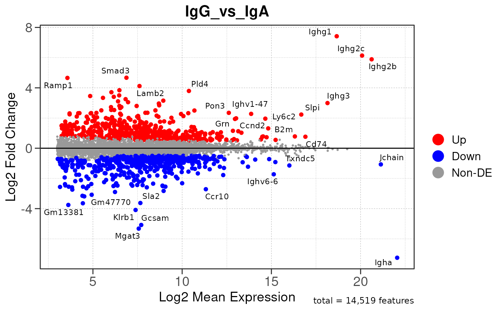
## Warning: ggrepel: 954 unlabeled data points (too many overlaps). Consider
## increasing max.overlaps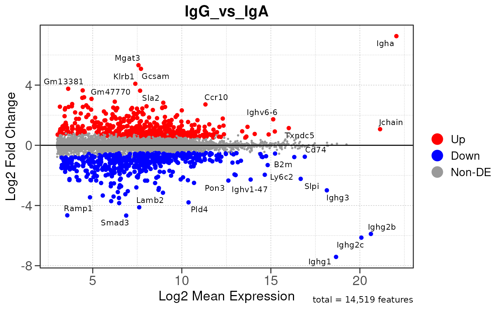
# Generate volcano plot for the "IgA_vs_IgG" comparison
plot_volcano(res, save_plot = FALSE, save_dir = save_dir)## Converting baseMean to numeric## Converting log2FoldChange to numeric## Converting padj to numeric## Converting rank to numeric## Warning: Removed 15580 rows containing missing values or values outside the scale range
## (`geom_text()`).## Warning: ggrepel: 37 unlabeled data points (too many overlaps). Consider
## increasing max.overlaps## Warning: Removed 15580 rows containing missing values or values outside the scale range
## (`geom_text()`).
## ggrepel: 37 unlabeled data points (too many overlaps). Consider increasing max.overlaps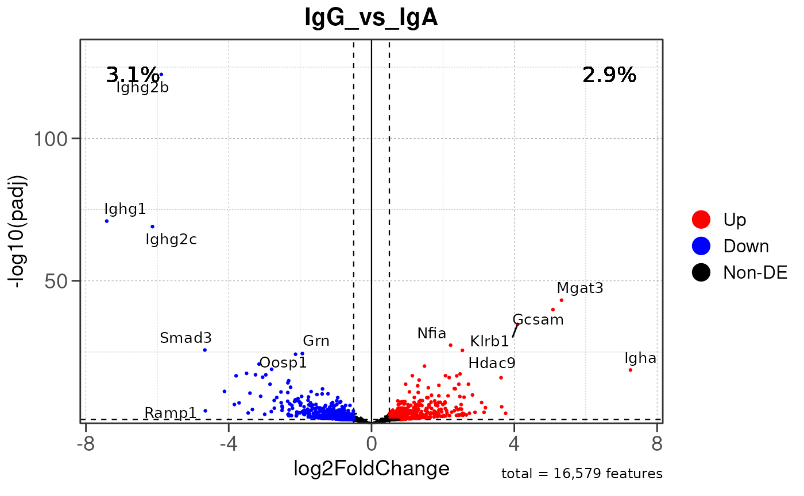
Module 3: GSEA Analysis
The final run_gsea_pip() module performs gene set
enrichment analysis to identify biological pathways and processes using
a list of MSigDB gene set collections (HALLMARK, GOBP, KEGG, REACTOME,
TFT, BIOCARTA). Gene sets must have at least 10 and no more than 1000
genes to be tested.
Main function
This returns a list of gseaResult class objects for each gene set collection and comparison.
# run gsea analysis
# gsea <- run_gsea_pip(res, org = org, save_data = save_data, save_dir = save_dir)
# run gsea analysis
gsea <- run_gsea(res, org = org, save_data = save_data, save_dir = save_dir)## Converting baseMean to numeric## Converting log2FoldChange to numeric## Converting padj to numeric## Converting rank to numeric## using 'fgsea' for GSEA analysis, please cite Korotkevich et al (2019).## preparing geneSet collections...## GSEA analysis...## leading edge analysis...## done...## using 'fgsea' for GSEA analysis, please cite Korotkevich et al (2019).## preparing geneSet collections...## GSEA analysis...## leading edge analysis...## done...## using 'fgsea' for GSEA analysis, please cite Korotkevich et al (2019).## preparing geneSet collections...## GSEA analysis...## leading edge analysis...## done...## using 'fgsea' for GSEA analysis, please cite Korotkevich et al (2019).## preparing geneSet collections...## GSEA analysis...## leading edge analysis...## done...## using 'fgsea' for GSEA analysis, please cite Korotkevich et al (2019).## preparing geneSet collections...## GSEA analysis...## leading edge analysis...## done...## using 'fgsea' for GSEA analysis, please cite Korotkevich et al (2019).## preparing geneSet collections...## GSEA analysis...## leading edge analysis...## done...
names(gsea)## [1] "ID" "Description" "setSize" "enrichmentScore"
## [5] "NES" "pvalue" "p.adjust" "qvalue"
## [9] "rank" "leading_edge" "core_enrichment" "collection"
## [13] "comparison"Generate barplots for top enriched gene set terms
Here we will use plot_gsea_barplot() to generate a
single barplot for the IgA_vs_IgG comparison using GOBP
collection as a demonstration. By default, the barplot will show the top
10 upregulated and downregulated terms.
# generate barplot for the "IgA_vs_IgG" comparison
plot_gsea_barplot(gsea, n = 10, save_plot = FALSE, save_dir = save_dir)## Converting NES to numeric## Converting pvalue to numeric## Converting qvalue to numeric## Warning in sub(paste0("^", collection, "_"), "", gsea$ID): argument 'pattern'
## has length > 1 and only the first element will be used## Warning in geom_col(aes(stroke = label), width = 0.75, col = "black"):
## Ignoring unknown aesthetics: stroke## Warning: Removed 1 row containing missing values or values outside the scale range
## (`geom_text()`).
## Warning: Removed 1 row containing missing values or values outside the scale range
## (`geom_text()`).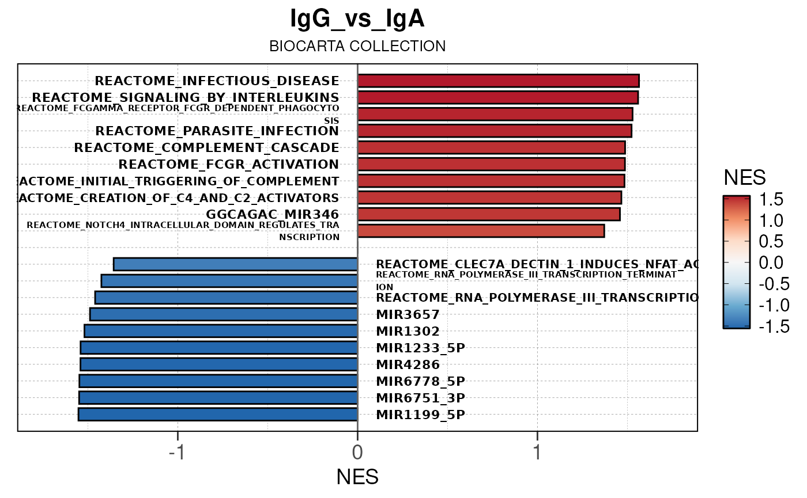
EnrichmentMap pipeline
Finally the module will run enrichmentmap_pip() which
creates a enrichmentmap directory containing files formated for
EnrichmentMap visualization.
By default, the function will only use the HALLMARK, GOBP, KEGG and REACTOME collections. We will skip this step here.
# run enrichmentmap pipeline
#enrichmentmap_pip(gsea, org = org, group_by = group_by, group_dir = group_dir, save_dir = group_dir)